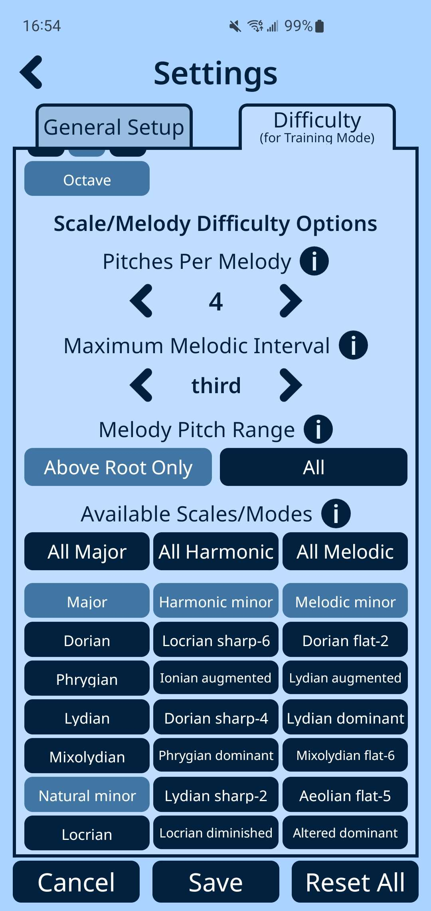
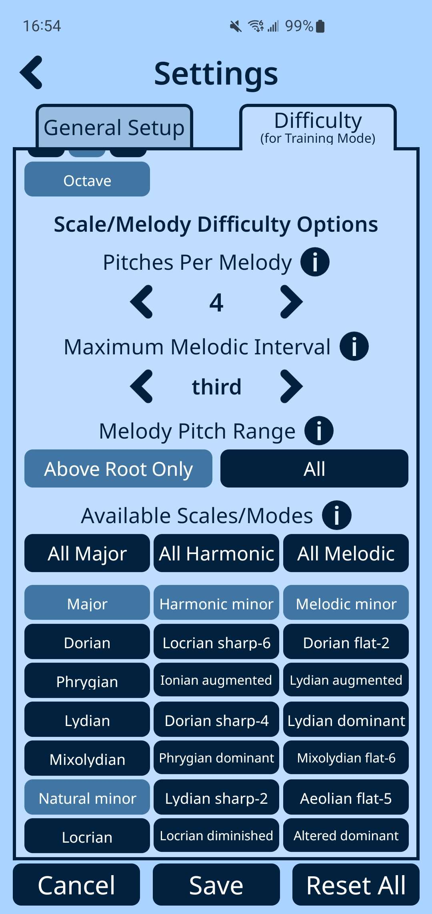

Try this unique ear training app to begin your quest for tuning superpowers!
"Incredibly helpful! Easy to use for a quick practice session or a longer one. It's helped me work on ear training skills that I knew I wanted to improve on but didn't necessarily know how I could possibly practice. This makes it possible - highly recommend!!" - Julia, 5 star reviewer
"About time someone made something like this! Necessary for any serious musician & helpful for all skill levels!" - Tommy, 5 star reviewer
Designed and developed by Dr. Thomas Verrier and Max Randal of the Blair School of Music at Vanderbilt University, Intonalogy® provides a precise and fully customizable framework for identifying and correcting tuning problems in chords, scales and melodies, in equal temperament or just intonation. It provides uniquely useful training for any conductor or musician wishing to fine-tune their ear and recognize more perfect intonation, and can be applied as a personal tool or in a classroom setting.

Intuitive interface
Practice on randomly generated chords, scales and melodies. See each pitch notated on the staff and labeled in the tuning interface. Tap and hold a slider to change the pitch, or just tap to adjust by one cent at a time. In Chords mode, press the speaker button below to louden that pitch. In Scales and Melodies modes, play the whole sequence or hear one or more notes at a time.
Detailed feedback
After submitting an exercise, see your error for each pitch, and compare your answer with the correct one to hear the difference. In Training Mode, try to lower your average error over time. In Challenge Mode, take on a gauntlet of ten exercises and try to improve your score!

 

Complete customization
Access the Settings page at any time for dozens of options to customize your experience. Pick from three distinct instrument samples, or randomize the sound of each pitch. Adjust the voicing of the chords to your liking. Select from three stereo modes, including "Pianist" and "Conductor" styles. Choose the set of scales, melodies and chords you want to focus on, including inversions and doubling. Or, let us balance the difficulty level for you by choosing from one of three available presets.
Classroom tools
The Assignments feature allows instructors to create custom challenges for students and see their scores. With the same customization options as the original app, this has proven to be an innovative and valuable tool for music educators up to the graduate level!

Try Now